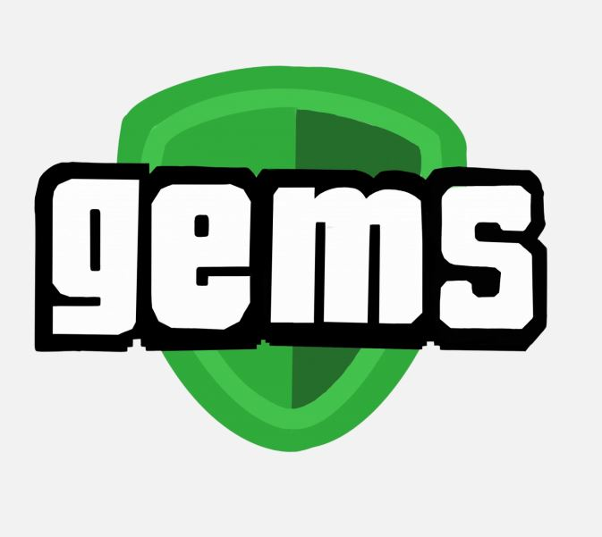
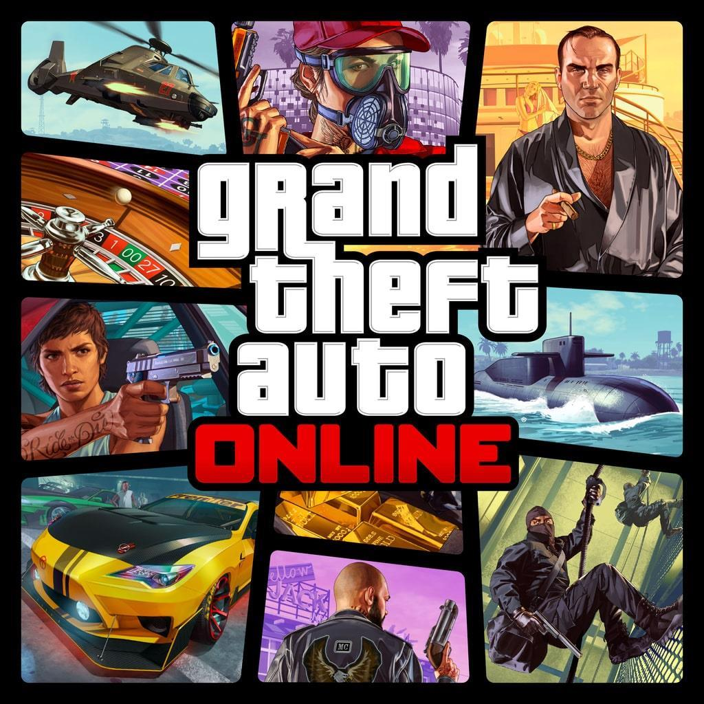
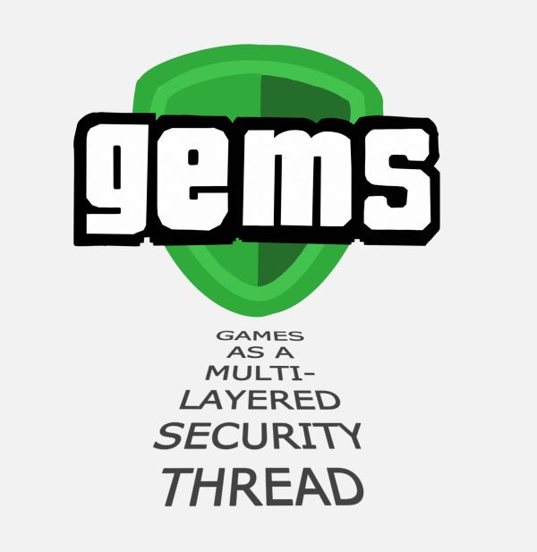
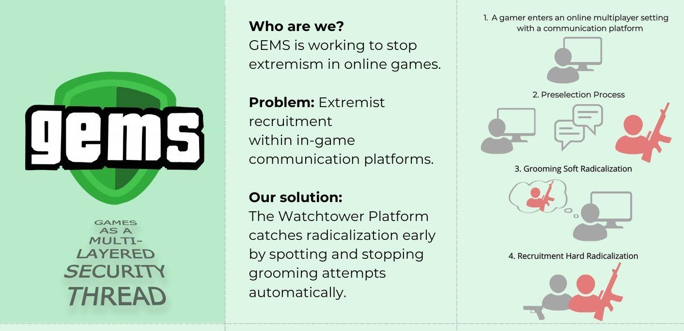
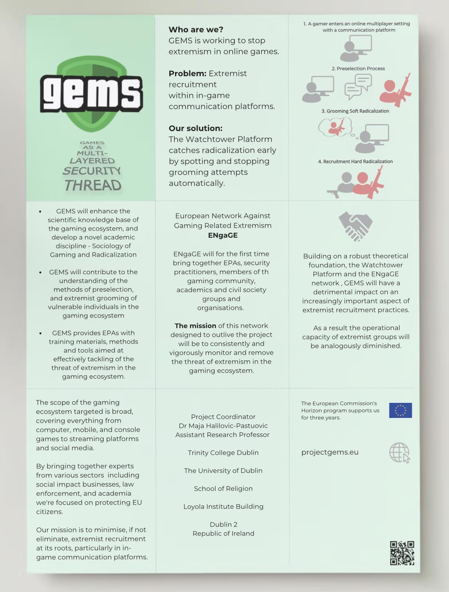

GEMS: GAMES AS A MULTI-LAYERED SECURITY THREAD
BRIEF
- Project GEMS aims to stop extremism in gaming.
- GEMS fights terrorism by studying how extremists use video games for recruitment. It then develops strategies to prevent this recruitment, involving experts from various fields to combat extremism in gaming.
- I developed the new logo and the concept of the leaflet.
LOGO

- The font of the text was chosen in style of GTA.
- The game is known for their portrayal of violence, including gunfights, car chases, and other criminal activities.
- The shield is a symbol of protection, like ones they use in antivirus apps.

OFFICIAL GAME POSTER
MAIN PAGE

The shadow looking text from the shield explains the abbreviation.
LAYOUT
FIRST PAGE

When person opens the leaflet the first thing you can see is the main information about the GEMS organization (Who? Why? What?) Then the graphic explanation shows how the terrorist organization recruits gamers.
Who are we? GEMS is working to stop extremism in online games.
Problem: Extremist recruitment within in-game communication platforms.
Our solution: The Watchtower Platform catches radicalization early by spotting and stopping grooming attempts automatically.
LEAFLET

The background color is chosen with the keeping the style of the color pallet of GTA.
The first and the last pages are made from the cardboard.
PROTOTYPE